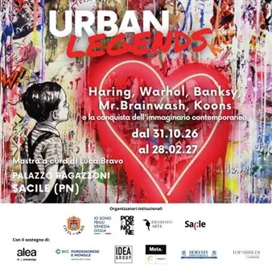

da sab 31 ott a dom 28 feb
Urban Legends. Haring, Warhol, Banksy, Mr. Brainwash, Koons und die Eroberung der zeitgenössischen Vorstellungskraft
Eine internationale Ausstellung zeitgenössischer Kunst, die mit dem Anspruch antritt, eines der kraftvollsten und einflussreichsten Kulturphänomene unserer Zeit zu beleuchten: die Transformation der Kunst in eine globale, urbane, mediale und populäre Sprache. Vom 31. Oktober bis…
 Indicazioni
Indicazioni
- Costi e prenotazioni
- Costo non indicato · Prenotazione non indicata
- Programma
- Programma da verificare. Apri la fonte ufficiale per orari e possibili aggiornamenti.
- In caso di maltempo
- Nessuna indicazione specifica pubblicata.
- Note
- Acquisito automaticamente dalla fonte.
L’EVENTO
Descrizione completa
Eine internationale Ausstellung zeitgenössischer Kunst, die mit dem Anspruch antritt, eines der kraftvollsten und einflussreichsten Kulturphänomene unserer Zeit zu beleuchten: die Transformation der Kunst in eine globale, urbane, mediale und populäre Sprache.
Es gibt Bilder, die wir betrachten. Und es gibt Bilder, die letztlich uns betrachten – Bilder, die uns so lange begleiten, bis sie Teil unseres kollektiven Gedächtnisses werden. Urban Legends erzählt die Geschichte dieser Eroberung.
Der Ausstellungsrundgang führt durch mehr als ein halbes Jahrhundert Kunst- und Visualkultur und verbindet Generationen, die scheinbar weit voneinander entfernt liegen. Von der Revolution der Pop Art, die Objekte, Gesichter und Symbole der Konsumgesellschaft in künstlerisches Material verwandelte, bis hin zur Street Art, die die Grenzen des traditionellen Ausstellungsraums sprengt und die Stadt als Ort des Ausdrucks und des Dialogs wählt.
Warhol erkannte die Macht des seriellen Bildes; Koons erhebt den Alltagsgegenstand zum Monument des Begehrens; Haring erfand ein unmittelbares und universelles visuelles Alphabet. Mit Banksy, Shepard Fairey und Mr. Brainwash wird das Bild stattdessen zur Provokation, zur Kritik, zur Kommunikation: Es kann auf einer Wand auftauchen und nur wenige Stunden später die ganze Welt umrunden. Flankiert werden sie von den Visionen von Angelo Accardi, Mr. Savethewall und Richard Orlinski, die eine Gegenwart zeigen, in der Sprachen, Zitate und Symbole der Kunstgeschichte koexistieren und sich kontinuierlich gegenseitig beeinflussen.
Die drei Stockwerke des Palazzo Ragazzoni werden so zu drei Kapiteln einer einzigen Erzählung. Die Künstler, Epochen und Ausdrucksformen wechseln, doch eine fundamentale Frage bleibt: Wann hört ein Werk auf, nur der Kunst anzugehören, und wird zu einem festen Bestandteil unserer Kultur? Urban Legends beginnt genau hier. In jenem geheimnisvollen Moment, in dem ein Bild auf unsere Augen trifft und – ohne dass wir es merken – beschließt, zu bleiben. Während das zwanzigste Jahrhundert das Zeitalter der großen Ideologien war, ist das unsere vielleicht das Jahrhundert der Bilder. Und heute besteht die wahre Eroberung nicht mehr nur darin, Einzug in ein Museum zu halten. Sie besteht darin, einen Platz im Gedächtnis von Millionen von Menschen zu finden.
Geöffnet jeden Donnerstag, Freitag, Samstag und Sonntag.
Offizielle Eröffnung: Samstag, 31. Oktober um 14:00 Uhr.
Donnerstag und Freitag: 10:00–13:00 Uhr und 14:00–19:00 Uhr
IL PROGRAMMA
Programma e orari
Appuntamenti raccolti dalle fonti elencate. Dove manca un orario, non è ancora disponibile in questa scheda.
Programma pubblicato
- Dal 2026-10-31 al 2027-02-28
INFORMAZIONI UTILI
Prima di partire
- Controllare la fonte prima di partire.
ORGANIZZAZIONE